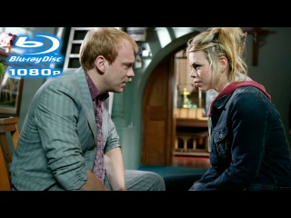
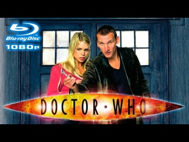
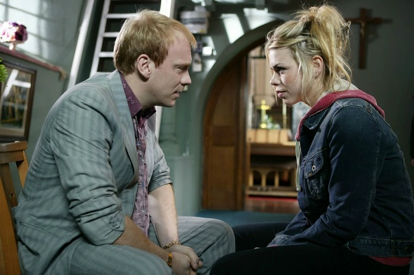

 |  Весь 1-й сезон (13 серий) |
Fathers Day
Дата выхода: 14 мая 2005
Формат: 45-минутный эпизод
| Варианты озвучек: | * Разные: смотрите по инструкции |
|---|---|
| Скачивание и просмотр: |
Питер Алан Тайлер, отец Розы и муж Джекки, умер 7 ноября 1987 года. В детстве Джекки рассказывала Розе о том, что когда Пит умирал, никого не было рядом с ним, и водителя, что сбил его, так и не нашли...
Теперь, будучи взрослой, Роза просит Девятого Доктора отвезти её к отцу, чтобы увидеть, как он погиб, но случайно меняет его судьбу, не понимая последствия этого парадокса. В конце-концов, Доктор спас так много жизней... какие могут быть последствия для человека, оставшегося живым в мире, где он должен был умереть?
